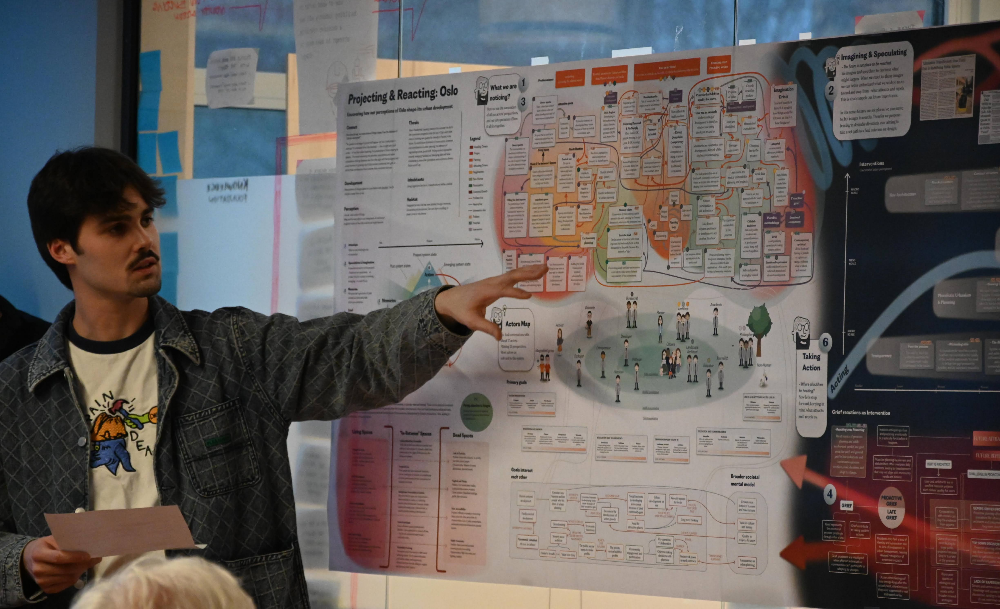

Systemic Design · 2024
PROJECTING AND REACTING: OSLO
Uncovering how our perceptions of Oslo shape its urban development
"Projecting & Reacting: Oslo" was developed during the 2024 Systems-Oriented Design (SOD) semester at the Oslo School of Architecture & Design (AHO) to investigate the future of urban diversity and the evolution of city habitats.
Utilizing a Rich Design Space methodology, the project leveraged Miro to collaboratively synthesize complex research into a comprehensive Gigamap that anchored the entire design process.
Central to this systemic inquiry is an Actors Map built from 15 interviews with city inhabitants, which identified four primary problem areas and the interconnected challenges faced by urban stakeholders. These dynamics were analyzed through a Perception framework, integrating Attention, Speculation, Memories, and Reaction, to operationalize the concept of "Proactive Grief."


Perception Analysis
The perception framework integrates six elements: Attention (out of the total present system state – what are we capturing), Speculation & Imagination (from what we notice in the present, we predict how the system is evolving), Memories (we store our experience of past systems as memories that inform our attention), Grief (both in past and future we react in the present with sorrow over what is and might be lost), Reaction (sensing all system states, we are repelled by reactions to desire for things to be different), Action (acting into emerging system states).


Push & Pull Drivers of Oslo
By mapping Oslo's systemic "Push & Pull" drivers, the research distinguished between attractors such as Queer Spaces, Decarbonization, City Branding & Placemaking, Scaling Up, and "Green City"; and repellers like Oil Dependence, Split East vs. West Oslo, Hostile Habitats, Growing Demand, and Rising Complaint Competency.
This analysis was refined through a feedback loop system that transformed blurry future speculations into a strategic Portfolio of Interventions, eventually culminating in the "Phase to Phase" newspaper deliverable and long-term systemic proposals like the "Tivoli Oslo" intervention.
The Gigamap
The project employs a Gigamapping methodology to navigate the complexity of urban ecosystems, centered around a comprehensive Actors Map derived from primary interviews with city inhabitants. By analyzing the interconnected challenges faced by these stakeholders, we identified four core problem areas that served as the foundation for speculative future scenarios.
While the future is presented as "blurry" — reflecting its timeless and imaginary nature — the implementation of a feedback loop system allows for a clearer distinction between attractive and repulsive outcomes. This process, governed by broader societal mental models and goal drivers, enables the transition from speculation to conscious action. Ultimately, the Gigamap serves as a strategic tool to guide a Portfolio of Interventions, ensuring informed decision-making for both mid-term and long-term future horizons.